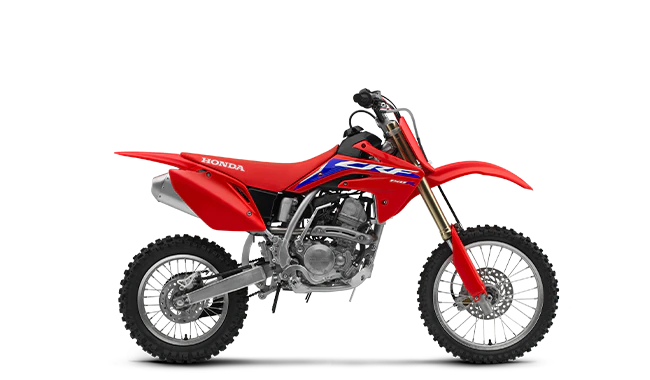

The CRF125F is designed to hit that sweet spot of no-hassle fun for younger riders, small or a little taller, or those who plain and simple, just enjoy the smooth Honda 125cc power. Fuel injection gives broad, reliable power. The twin-spar steel frame can handle the dings of off-road use. The long-travel suspension delivers a plush ride and the electric starter and four-speed transmission give you all the control of a full-sized bike.
